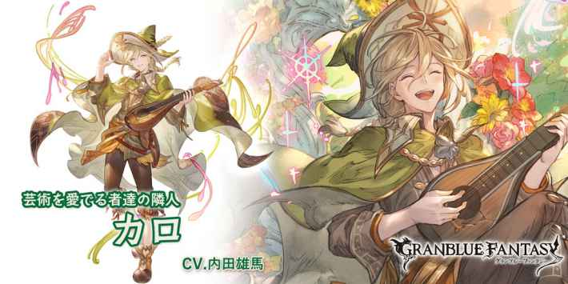

カロ
基本資訊
| 定位 | 平衡 |
| 得意武器 | 樂器 |
| 種族 | 星晶獸 |
| CV | 内田雄馬 |
立繪
上限解放前

上限解放後

奧義
| クオーレデラルテ | |
| 4.5倍風屬性傷害 2技(トリブーナ)CD歸0 |
技能
 CD:14 |
マエスタ |
| 風屬性角色マエスタ效果(無法消除/受到2次傷害解除) ・高揚效果(每T奧義值+10%) ・受到的傷害轉為土屬性 ・土屬性傷害-50% ・弱體耐性+100% #隊伍中有樂器得意角色時，CD減少 ・1人每1T/最大CD-6 |
|
 CD:7 |
トリブーナ |
| 敵方全體3倍風屬性傷害 ・攻防-5%(累積/最多40%)×180秒 ・調律Lv+1(最多10/無法回復)×180秒 └每回合HP-1萬×調律Lv(最多10萬) └弱體無效以外的弱體效果必中 #依據調律Lv提升造成的傷害及攻防下降次數 ・1+調律Lv次(最多6次) |
|
 CD:10 |
ネスドルマ |
| 風屬性角色弱點屬性20%追擊×4T #普攻後調律Lv7以上時追加效果 ・攻擊+50%(1次) └普攻上限+116萬/奧義上限+50萬 #調律Lv10以上及第10T後追加效果 ・2動×1T |
被動技能
 |
芸術を愛する守護者 |
| 依據隊伍中樂器得意角色數量給予自己強化 1人:攻擊+30% 2人:防禦+100% 3人:必TA 4人:迴避率+約20% 5人:奧義值上升量+20% #包含自己 |
|
|
希望の音色 |
| 隨著敵方調律Lv提升樂器得意的角色的 ・攻擊+3%×調律Lv(最多30%) ・傷害上限+1%×調律Lv(最多10%) |
武器